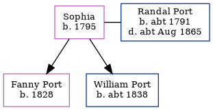

Sophia Port 1795 -
[ Home ] | [ Calendar ] | [ Surnames Index ] | [ Errors ] | [ Family History ]Sophia, the wife of Randal Port (the four times great-uncle of Nigel Horne), was born in Chislet, Kent, England in 17951had 2 children, Fanny and William. On 30 Mar 1851, she was living in Reculver, Kent, England1.
Children
- Fanny was born in 1828
- William was born c. 1838
Citations
- 1851 England, Wales & Scotland Census - Findmypast (was age 56 and the wife of the head of the household)
Family Tree
Map
Generated by ged2site. Last updated on Jul 3, 2024